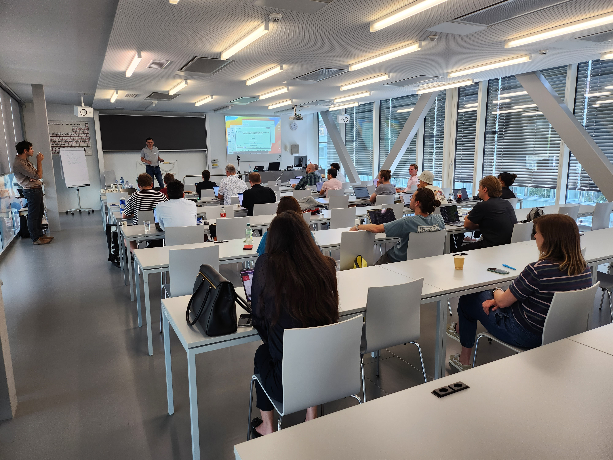

Latest News
Discussion with CETAF Publisher group at HEG Geneve
Date: Sept 14-15, 2023 Location: Geneva, Switzerland
People:
Goal:
Workshop webpage & Registration

Workshop Text Mining and Biodiversity Research Infrastructure
Date: June 12, 2023 Location: Neuchâtel, Switzerland
Scientific committee:
Topic:
Link to the workshop Swiss-Text webpage
Lecture provided by Patrick Ruch (SIB/HESSO) available here.

Presentation at Geneva Conservatory and Botanical Garden
Date: June 9th, 2023 Location: Geneva, Switzerland
Topics:
Lecture provided by Patrick Ruch (SIB/HESSO) available here.
Training in South Africa with eBioDiv involvement
Date: April 18 to 21st, 2023 Location: Pretoria, South Africa
Organization:
Goal:
More details on Plazi website.
Training in Brazil with eBioDiv involvement
Date: April 3 to 6, 2023 Location: Porto Alegre, Brazil
Organization:
Goal:
Specimen - material citation matching service training course
Date: February 27 & 28, 2023 Location: Online
Organization:
Goal:
More details on Plazi website.
Scientific Advisory Board meeting 2
Date: February 21st, 2023 Location: Online
People:
Topics:
- Discussions about:
- Communication
- Identifiers
- Material matching edge cases
- Training:
- target groups for the traning(s)
- training stakeholders
- Collaborations:
- NFDI4Biodiversity
- Biodiversity communites: World Spider Catalogue, WORMS, FishBase, ReptilBasem,
Mammals Data base, GBIF Nodes
- CETAF
- WHO's OneHealth
- Algae project at CJB Geneva
- RI landscape Europe
- Outreach:
- MusNatColl Metting (June 2023, Geneva)
Scientific Advisory Board meeting 1
Date: November 15, 2021 Location: Online
People:
Topics:
- Bulding a corpus of journals covering Swiss natural history collections.
- How involve amateur communities ?
- Can eBioDiv literature be integrated into SwissCollNet ?
- Need a discussion with publishers
- How keep annotation longterm, not temporal ?
- How to deal and link MfN backlog into eBioDiv ?
- Definition of use cases (BiCIKL)
- eBiodiv services:
S1. operational system to provide the world access to data in taxonomic publications
S2. workflow from the library to users providing access to FAIR data from within publications
S3. curation of data tagged in publications (QC)
S4. import of data to SIBiLS (treatment) and GBIF (article, treatment, material citation)
S5. Cross-references between literature and curated databases
S6. enable downstream support of a wide range of research use cases (e.g. biotic interactions)
- Bidirectional linking between literature and GBIF:
S7 bidirectional linking of GBIF occurrence data with material citations from publications
S8. potential bidirectional links (automated process)
S9. curation of the links
Conclusion:
Key questions about the project:
-
What are the key challenges to support biodiversity infrastructures ?
- taxonomic names
- not solving a global problem
- but solve it one journal by one journal
- report on each journal what could be done better: start with a global guidelines and trying to encourage them to ask for the analysis.
- taxonomic names
-
Which communities could benefit from eBioDiv beyond biodiversity communities ?
- the publishing community
-
What could the museums infrastructures do better to facilitate eBioDiv ?
- better publishing
- better material citations
- use better ways to do better names publishing